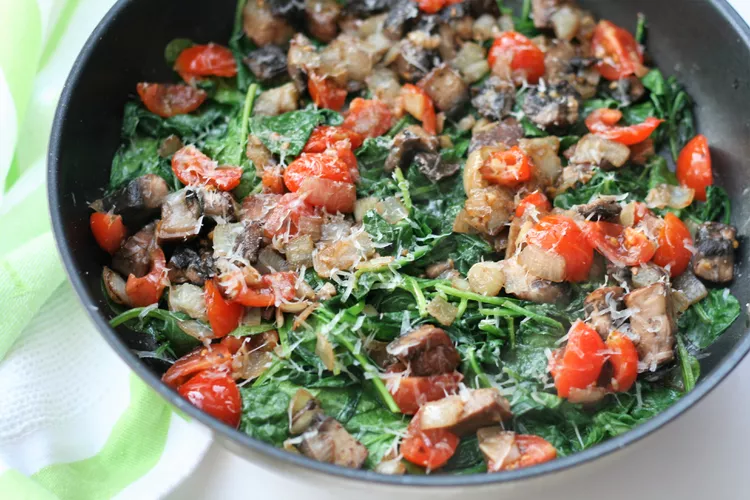

Sauteed Spinach and Mushrooms

Description
Spinach, mushrooms, onios and garlic sauteed beautifully with a bit of tomato to add some zip!
Ingredients
- 2 Tbsp Olive Oil
- 1 Medium Onion
- 1 Cup Chopped Portabello Mushrooms
- 2 Cloves Garlic, Finely Chopped
- 1 Medium Tomato, Chopped
- 1 (8 Ounce) Package of Fresh Baby Spinach
- 1/2 tsp Salt
- 1/8 tsp Ground Black Pepper
- 2 Tbsp Grate Parmesan Cheese
Steps
-
Heat 1 tablespoon oil in a wok or deep frying pan over medium heat. Add onion and saute until soft, 3 to 5 minutes, depending on how soft you like it.
Add mushrooms and saute for 4 to 5 minutes. Add garlic and saute for 1 more minute. Add tomato and cook for 1 to 2 minutes. Remove mixture to a dish and keep warm.
-
Add remaining 1 tablespoon oil to the same pan over medium-high heat. Add spinach, salt, and pepper. Cook, tossing continually, until spinach begins to wilt, 1 to 2 minutes.
Add onion mixture and mix until thoroughly incorporated. Continue to toss and stir until spinach is cooked to your desired doneness.
-
Sprinkle with Parmesan cheese to serve.
Home